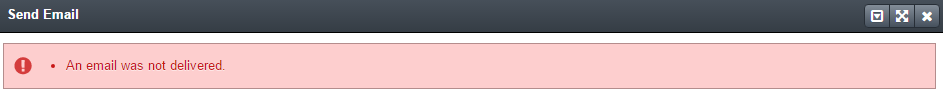
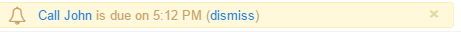
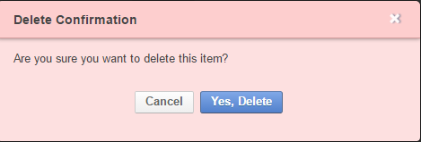

Flash Notifications and Dialog Windows¶
While using OroCommerce, you may sometimes need to inform a user about some events in the system. For example, when an operation has been executed or has failed, or they need to be reminded about a task or event.
Success flash messages are displayed against a green background:
If something has gone wrong, the flash message will be displayed against a red background in order to attract your attention.
Other flash messages have a yellow background.
Sometimes, a flash message can contain links to other pages, such as the task reminder above, or this synchronization message:
Flash messages appear on the top of the screen for several seconds and then disappear.
If the user must make a decision before the system can go on, a dialog window will appear. The dialog windows have buttons and will not disappear until a decision has been made:
Related Topics